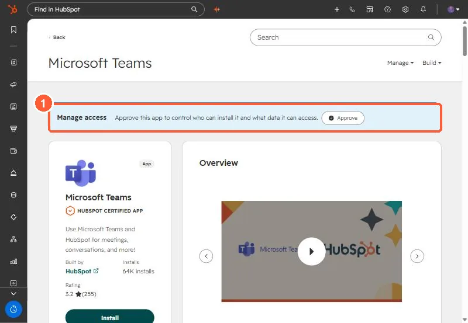

Short answer
Admin consent lets the HubSpot app into the Microsoft tenant. It does not connect each person. HubSpot maps a HubSpot user to a Teams user automatically when the email matches, and otherwise the user connects from My settings and clicks Verify on a message from HubSpot in Teams. On an IT services client's rollout, one user's meeting links only started working after they accepted the permission prompts on their own account, and access also depended on which Entra groups they were in. Entra groups can control who gets the app, but they do not set HubSpot roles. Those stay in HubSpot.
1. What happened
On an IT services client's Teams rollout, the IT lead had approved the HubSpot app. Teams meeting links and notifications worked for some users and not for one. That user's Microsoft permissions differed from a colleague's. What fixed it:
- IT added the user to the Entra group that had the HubSpot app assigned.
- The user accepted the permission prompts on their own account. After that their meeting links worked.
- IT also removed redundant HubSpot app entries in the tenant.
One thing we confirmed on that call: Entra groups can decide who gets the app, but they cannot assign HubSpot roles or permissions. Those are still managed in HubSpot.
2. The HubSpot side of it
HubSpot's help article says you must map your HubSpot user to your Teams user to use all of the integration's features. Mapping is automatic when the email matches in both apps. When it does not:
- Open Connected Apps, click Microsoft Teams, then the Settings tab and My settings.
- Click Connect account, enter the Teams email, and click Update linked account.
- In Microsoft Teams, click Verify on the message from HubSpot.


3. Make it a checklist
On that rollout the team tracked each rep's connection as a HubSpot task, because the work happens on each person's account. A list of who has connected beats guessing from error messages. The same idea applies to email and calendar, covered in auditing every user's connections.